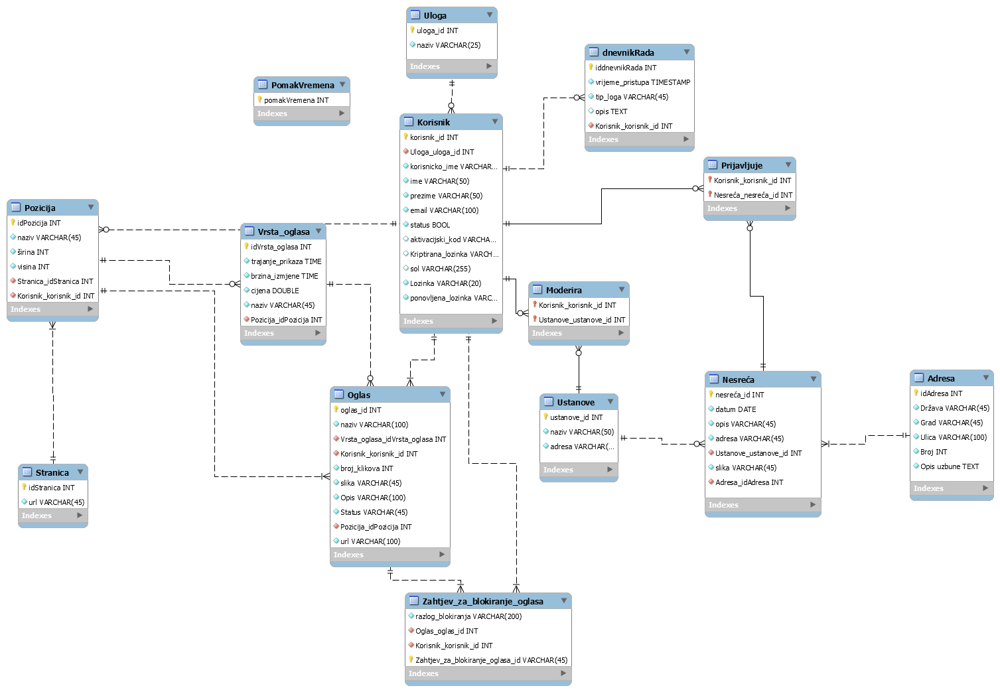
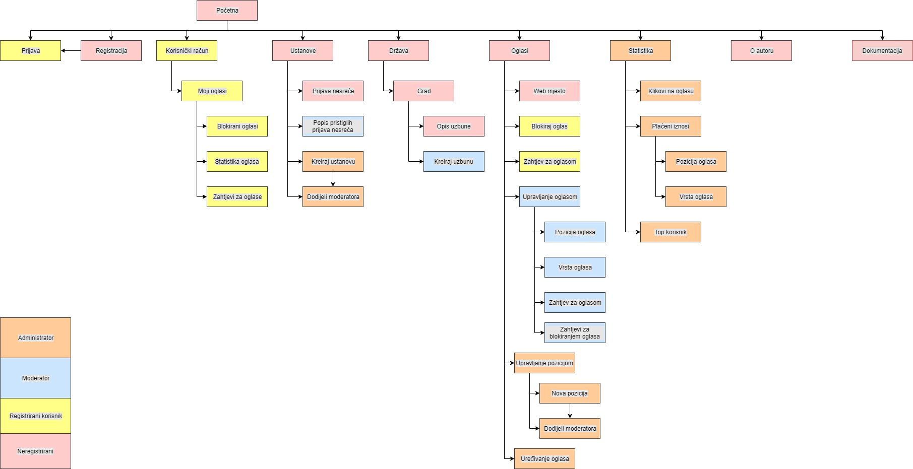

Svrha ovog projektnog zadatka je bila napraviti sustav koji će korisniku omogućiti korisniku prijavu nesreća hitnoj službi
Postoje 4 uloge korisnika
Administrator
Moderator
Registrirani korisnik
Neregistrirani korisnik
Administrator može: kreirati ustanove te istima dodijeliti moderatore, definirati pozicijre prikaza oglasa navođenjem stranice, vidi statistiku klikova oglasa, statistiku plaćenih oglasa po iznosima te vidi i top listu korisnika s najviše plaćenih oglasa
Moderator može: vidjet popis prijava nesreća, popis gradova i država te kreirati neku uzbunu za neki grad, određuje vrstu oglasa za pozicije za koje je zadužen, vidi popis zahtjeva za oglašavanjem oglasa za njegove pozicije, vidi zahtjeve za blokiranjem oglasa
Registrirani korisnik može: poslati zahtjev za blokiranjem oglasa, može kreirati zahtjev za kreiranjem oglasa, vidi popis svojih zahtjeva, vidi statistiku klikova za svoje oglase
Neregistrirani korisnik može: može vidjet popis ustanova i nesreća, može prijaviti nesreću, može vidjeti popis država i gradova za koje je kreirana uzbuna, vidi oglase na stranicama, može kliknut na oglas koji ga vodi na web mjesto oglasa, može prevesti stranice
Opis projektnog riješenja
Projektno riješenje sadrži bazu podataka u kojoj se nalaze svi entiteti potrebni za rad sustava. Projekt je napravljen od par HTML dokumenata, većeg dijela PHP datoteka te jedne CSS datoteke, uz par slika. Također, još su u radu bili korišteni JavaScript i AJAX. PHP je bio korišten za rad s bazom podataka i stvaranje stranica, HTML za stranice koje nisu trebale koristiti PHP, a AJAX i JavaScript za automatsko ažuriranje, tj. ispis podataka.
ERA

Navigacijski model

Popis i opis skripata
Skripte i stranice koje se pojavljuju kod svih korisnika su sljedeće:
ustanove_js.js - služi za ispis ustanova i nesreća u njima
Skripte koje koristi administrator:
A_odBlokirajKorisnika.php - stranica administratora gdje (od)blokira korisnika, također stranica sadrži linkove na ostale stranice administratora
A_pregledDnevnika.php - stranica za pregled dnevnika (loga)
A_statistikaKlikova.php - vidi statistiku klikova za oglase
A_statistikaOglasa.php - vidi statistiku plaćenih oglasa
A_topKorisnici.php - vidi koji su top korisnici
moderatorIUstanove.php - stranica za dodjelu moderatora ustanovama, te također kreiranje moderatora i samih ustanova
stvaranjePozicije.php - stranica za stvaranje pozicije
Stranice koje koristi moderator
M_kreirajVrstu.php - kreiranje vrste oglasa
M_zahtjeviZaBlok.php - vidi popis zahtjeva za blokiranjem oglasa
M_zahtjeviZaOglasima.php - vidi popis zahtjeva za stvaranjem oglasa
Stranice koje koristi registrirani korisnik
R_DajOglas.php - šalje zahtjev za oglasom
R_mojiOglasi.php - vidi galeriju svojih oglasa
R_statistikaKlikova.php - vidi statistiku klikova za svoje oglase
zaBlokiranjeOglasa.php - šalje zahtjev za blokiranjem oglasa
Ostale skripte koje se koriste u radu:
brišiCookie.js - koristi se kod administratora kada želi obrisati kolačić o uvjetima korištenja
mpianec_js.js - služi za provjere kod registracije
oglasiBlok.js - služi za ispis oglasa koje treba blokirat
zahtjevZaOglas.js - služi za kreiranje oglasa
AJAXProvjeraKorisnika.php - služi kao potpora mpianec_js.js
Dokumentacija.html - ova stranica
aktivacija.php - služi kao potpora Registracija.php, koristi se za aktivaciju korisničkog računa
baza.class.php - koristi se za spajanje na bazu, uzeta s labosa
dohvatiOglase.php - služi za dohvaćanje oglasa, koristi se u oglasi.js
dohvatiPoziciju.php - služi za dohvaćanje pozicije, koristi se u zahtjevZaOglas.js
dohvatiUstanove.php - služi za dohvaćanje ustanova, koristi se u ustanove_js.js
dohvatiUzbunu.php - služi za dohvaćanje uzbune, koristi se u ustanove_js.js
dohvatiVrstuOglasa.php - služi za dohvaćanje vrste oglasa, koristi se u zahtjevZaOglas.js
funkcije.php - sadrži 2 funkcije koje se koriste u pomakVremena.php
odjava.php - koristi se za odjavu korisnika
oglasKlikovi.php - koristi se za povećanje broja klikova u oglasi.js
oglasiBlok.php - dohvaća listu aktivnih oglasa koji se mogu blokirat, koristi se u oglasiBlok.js
pomakVremena.php - služi za postavljanje pomaka vremena
prijava.css - koristi se za sva uređenja unutar ovog projekta
updateZahtjevaZaBlokiranje.php - postavlja zahtjev za blokiranjem u tablicu, koristi se u oglasiBlok.js
zaboravljenaLozinka.php - stranica za zaboravljenu lozinku
o_autoru.html - stranica o autoru ove stranice
Korištene tehnologije
Za izradu projekta korišteno je sljedeće:
MySQL Workbench 6.3 CE - korišten za izradu modela baze podataka
NetBeans IDE 8.2 - korišten za izradu svih skripata i strukture
phpmyadmin.barka.foi.hr - poslužitelj koji je korišten za pohranu baze podataka
Korišteni vanjski izvori
Za pomoć pri izradi projekta korišteni su:
Stackoverflow - korišten u slučaju da nešto nije bilo jasno kako napraviti, a da W3Schools to ne sadrži
W3Schools - sadrži brojne primjere koji su bili od velike pomoći pri izradi projekta
Također, pri izradi nekih skripata (oglasi.js i ustanove_js.js,funkcije.php, pomakVremena.php) imao sam pomoć kolega(objašnjeno mi je korištenje AJAX-a i pomaka vremena)